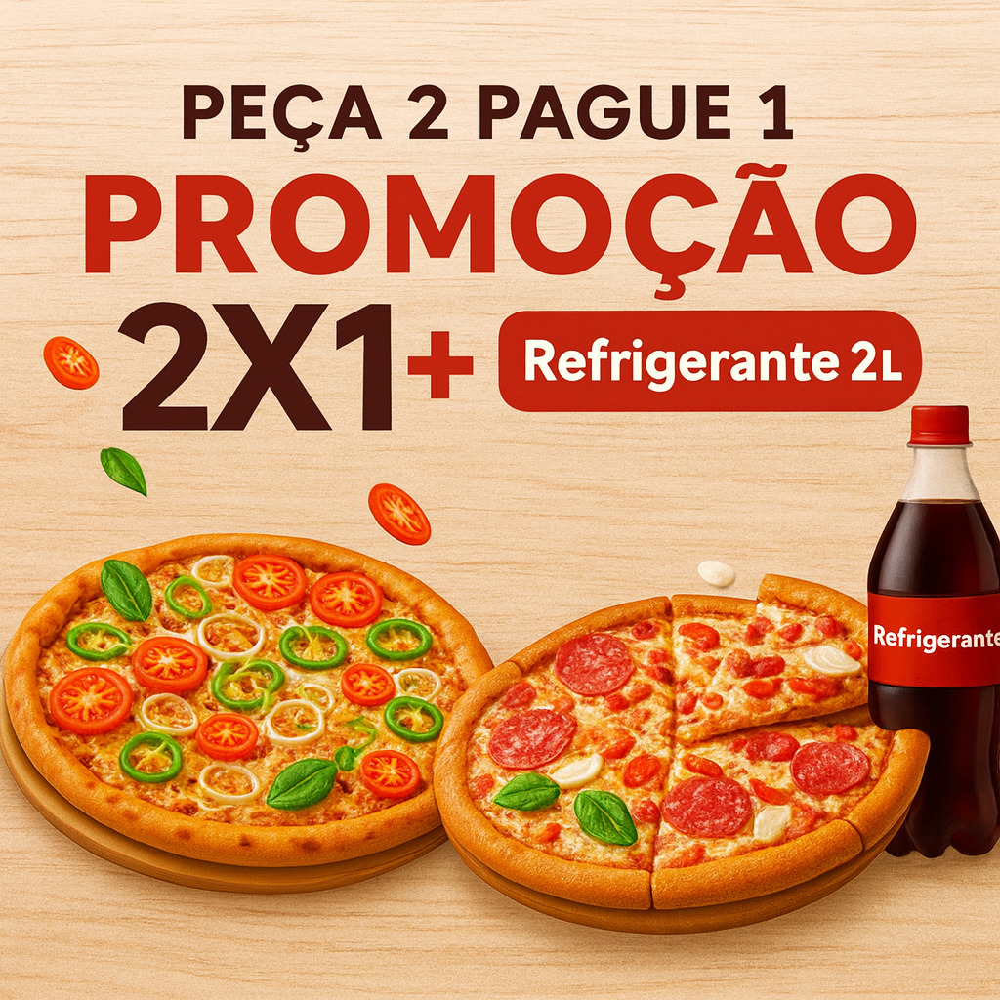

2 Pizza P + 1 Refrigerante 2 Litros
Borda Recheada Grátis
R$ 63,80
R$ 42,90
Primeira Pizza - Meio a Meio:
Escolha até 2 opções:0/2
Calabresa
Molho de tomate, mussarela, calabresa e cebola.Mussarela
Molho de tomate e bastante queijo mussarela.Portuguesa
Molho de tomate, mussarela, presunto, ovo, cebola, pimentão e azeitona.Frango com Catupiry
Frango desfiado temperado com catupiry.Pepperoni
Molho de tomate, mussarela e pepperoni.Quatro Queijos
Mistura de queijos (geralmente mussarela, parmesão, provolone e gorgonzola)Marguerita
Molho de tomate, mussarela, tomate e manjericão fresco.Bacon
Molho de tomate, mussarela e bastante bacon crocante.Moda da Casa
Molho de tomate,Mussarela,Calabresa,Bacon,Catupiry,Cebola roxa,Azeitonas pretas OréganoCarne Seca com Catupiry
Carne seca desfiada combinada com catupiry.Vegetariana
Uma opção com legumes como tomate, pimentão, champignon, cebola e azeitonas.Caprese
Molho de tomate, mussarela de búfala, tomate em rodelas, manjericão fresco, azeite de oliva.Palmito
Molho de tomate, mussarela e palmito picado.Chocolate
Cobertura de chocolate ao leite e leite condensado e morangos).Segunda Pizza - Meio a Meio:
Escolha até 2 opções:0/2
Calabresa
Molho de tomate, mussarela, calabresa e cebola.Mussarela
Molho de tomate e bastante queijo mussarela.Portuguesa
Molho de tomate, mussarela, presunto, ovo, cebola, pimentão e azeitona.Frango com Catupiry
Frango desfiado temperado com catupiry.Pepperoni
Molho de tomate, mussarela e pepperoni.Quatro Queijos
Mistura de queijos (geralmente mussarela, parmesão, provolone e gorgonzola)Marguerita
Molho de tomate, mussarela, tomate e manjericão fresco.Bacon
Molho de tomate, mussarela e bastante bacon crocante.Moda da Casa
Molho de tomate,Mussarela,Calabresa,Bacon,Catupiry,Cebola roxa,Azeitonas pretas OréganoCarne Seca com Catupiry
Carne seca desfiada combinada com catupiry.Vegetariana
Uma opção com legumes como tomate, pimentão, champignon, cebola e azeitonas.Caprese
Molho de tomate, mussarela de búfala, tomate em rodelas, manjericão fresco, azeite de oliva.Palmito
Molho de tomate, mussarela e palmito picado.Chocolate
Cobertura de chocolate ao leite e leite condensado e morangos).Borda Recheada:
Escolha até 2 opções:0/4
Catupiry
A mais clássica, feita com requeijão cremoso Catupiry originalCheddar
Recheada com queijo cheddar, dando um sabor mais marcante.Mussarela
Bordas recheadas com bastante queijo mussarela derretido.Chocolate
Perfeita para pizzas doces, com chocolate ao leite ou meio amargo.Calabresa Moída
Uma opção salgada com calabresa triturada e queijo, bem saborosa.Escolha seu Refrigerante:
Escolha até 1 opção:0/4
Coca-Cola 2L
Refrigerante clássico, sabor refrescante e famoso mundialmente.Fanta Laranja 2L
Sabor cítrico e refrescante, uma das preferidas para acompanhar comidas.Guaraná Antarctica 2L
Refrigerante de guaraná com sabor único e tradicional.Sprite 2L
Refrigerante refrescante, sabor limão com gás.Pepsi 2L
Sabor doce e refrescante, ideal para todas as refeições.Schweppes Citrus 2L
Refresco cítrico e levemente amargo, excelente para quem busca algo diferente.
0/180